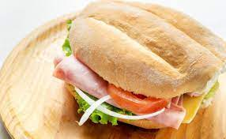

Tortas de Jamon

Description
A torta con jamon is a classic mexicain dish consisting of a special type of bread call un Bolio, jamon or ham, cheese and vegtables like lettece and tomatos.
Ingredients
- Bread
- Ham
- Mayo
- Cheese
- Lettece
- Tomato
- First cut the head in half
- Toast both sides
- Apply mayo on both sides
- Add ham to bottom side
- Add cheese, lettece, tomato on top
- Put top of bread on